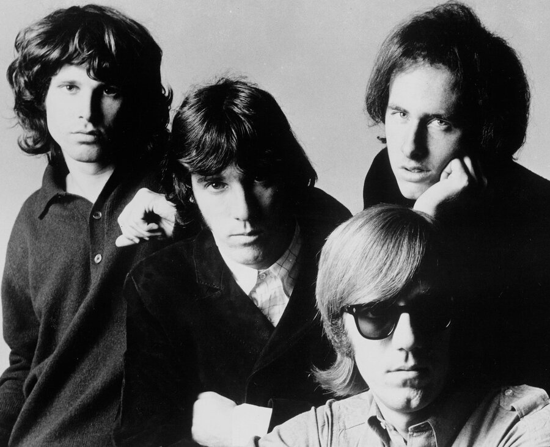

The Doors turned Jim Morrison's poetry and Ray Manzarek's organ into one of the defining sounds of 1960s psychedelic rock.
Formed in Los Angeles in 1965, the band scored a number one hit within two years and became one of rock's most controversial acts.

Table of Contents
- Formation and the Band's Name
- Light My Fire and the Rise to Fame
- The Miami Incident, Morrison's Death and Legacy
- FAQ
Formation and the Band's Name
Jim Morrison and Ray Manzarek met while both studied film at UCLA in the mid-1960s.
They crossed paths again on Venice Beach in the summer of 1965, and Morrison recited lyrics that would become "Moonlight Drive."
Manzarek proposed they start a band on the spot.
They recruited drummer John Densmore and guitarist Robby Krieger from a transcendental meditation class, completing the classic lineup.
The band never carried a dedicated bassist, with Manzarek's keyboard bass filling that role live and in the studio.
Where the Name Came From
The name came from Aldous Huxley's 1954 book "The Doors of Perception."
Huxley took his title from a line in William Blake's "The Marriage of Heaven and Hell."
Blake wrote that cleansing human perception would reveal the world as it truly is, infinite.
Elektra Records founder Jac Holzman signed the band in 1966 after seeing them perform at the Whisky a Go Go on Sunset Strip.
The club had fired the band shortly before, reportedly over an extended, profane retelling of the Oedipus myth that Morrison worked into "The End."
Light My Fire and the Rise to Fame
The band's self-titled debut arrived on Elektra Records in January 1967.
Lead single "Break On Through (To the Other Side)" made only modest noise on the charts.
"Light My Fire," written mostly by Krieger, became the breakthrough.
It topped the Billboard Hot 100 that summer, the band's first number one.
The album version ran nearly seven minutes on the strength of Manzarek's organ solo and Krieger's guitar solo, both trimmed down for the radio edit.
Strange Days and Waiting for the Sun
"Strange Days" followed that October, the band's second album inside a single year.
Its title track used one of the earliest Moog synthesizers heard on a rock record, run through Morrison's vocal.
"Waiting for the Sun" came out on July 3, 1968, and became the group's only album to reach number one on the Billboard 200.
Its lead single, "Hello, I Love You," gave the band a second chart-topping single.
| Album | Released | Notable song |
|---|---|---|
| The Doors | January 4, 1967 | Light My Fire |
| Strange Days | October 1967 | Strange Days |
| Waiting for the Sun | July 3, 1968 | Hello, I Love You |
| The Soft Parade | July 18, 1969 | Touch Me |
| Morrison Hotel | February 9, 1970 | Roadhouse Blues |
| LA Woman | April 19, 1971 | Riders on the Storm |
The Miami Incident, Morrison's Death and The Doors' Legacy
A chaotic, unpredictable show at Miami's Dinner Key Auditorium on March 1, 1969 changed the band's fortunes.
Morrison was charged days later with felony indecent exposure plus several misdemeanor counts, including profanity and public drunkenness.
A September 1970 trial convicted him of indecent exposure and open profanity, though he was acquitted of the felony charge and lewd behavior.
Florida's governor, backed by the ACLU, issued Morrison a posthumous pardon in December 2010, officially clearing his name.
The band's sixth and final studio album with Morrison, "LA Woman," arrived in April 1971, carrying "Riders on the Storm" and "Love Her Madly."
Morrison then moved to Paris with his partner, Pamela Courson, intending a break from music.
He died there on July 3, 1971, at age 27.
Courson found him in the bathtub of their apartment.
His death certificate listed heart failure, though no autopsy was performed.
He was buried on July 7, 1971, at Paris's Père Lachaise Cemetery, now one of the cemetery's most visited graves.
The remaining trio recorded two more albums, "Other Voices" and "Full Circle," before disbanding in 1973.
The band was inducted into the Rock and Roll Hall of Fame in January 1993.
The band received a Grammy Lifetime Achievement Award in 2007.
Its catalog still anchors classic rock radio and film soundtracks more than five decades later.
- Jim Morrison, lead vocals and lyrics
- Ray Manzarek, keyboards and keyboard bass
- Robby Krieger, guitar
- John Densmore, drums
FAQ
Who were the members of The Doors?
Jim Morrison sang lead vocals and wrote most of the lyrics.
Ray Manzarek played keyboards, Robby Krieger played guitar and John Densmore played drums.
The band never used a dedicated bass player in the studio or on stage.
Why is the band called The Doors?
The name borrows the title of Aldous Huxley's 1954 book about his mescaline experience.
Huxley took that title from a line by poet William Blake about cleansing human perception.
What happened at The Doors' 1969 Miami concert?
At a March 1, 1969 show at Miami's Dinner Key Auditorium, Morrison was charged with felony indecent exposure along with several misdemeanor counts.
A 1970 trial convicted him of indecent exposure and profanity, and Florida's governor issued a posthumous pardon in December 2010.
How did Jim Morrison die?
Morrison died in Paris on July 3, 1971, at age 27.
His girlfriend found him in the bathtub of their apartment.
The death certificate listed heart failure, but no autopsy was performed.
Is The Doors in the Rock and Roll Hall of Fame?
Yes.
The surviving members and Morrison's estate were inducted in January 1993.
The band also received a Grammy Lifetime Achievement Award in 2007.
Few bands packed as much myth into six years as this one did.
The Doors turned Morrison's poetry and blues rock rhythm into a blueprint for psychedelic rock.
Their sound sits alongside The Who and other British Invasion acts in pushing rock toward psychedelia by the late 1960s, a shift documented on Wikipedia's history of the band.
Back to the 1960smusic.net homepage to explore every genre of the decade.